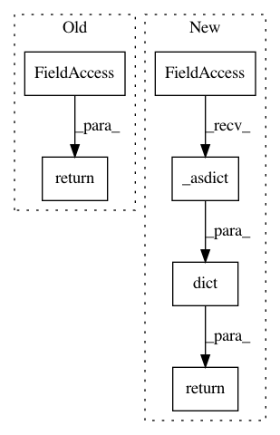

589f0269608f2199c4881e4a29d6ed494229b674,official/nlp/modeling/networks/albert_encoder.py,AlbertEncoder,get_config,#AlbertEncoder#,191
Before Change
return self._embedding_layer.embeddings
def get_config(self):
return self._config_dict
@classmethod
def from_config(cls, config):
return cls(**config)
After Change
return self._embedding_layer.embeddings
def get_config(self):
return dict(self._config._asdict())
@classmethod
def from_config(cls, config):
return cls(**config)
In pattern: SUPERPATTERN
Frequency: 3
Non-data size: 6
Instances
Project Name: tensorflow/models
Commit Name: 589f0269608f2199c4881e4a29d6ed494229b674
Time: 2020-10-23
Author: gardener@tensorflow.org
File Name: official/nlp/modeling/networks/albert_encoder.py
Class Name: AlbertEncoder
Method Name: get_config
Project Name: tensorflow/models
Commit Name: 589f0269608f2199c4881e4a29d6ed494229b674
Time: 2020-10-23
Author: gardener@tensorflow.org
File Name: official/nlp/modeling/networks/classification.py
Class Name: Classification
Method Name: get_config
Project Name: tensorflow/models
Commit Name: 589f0269608f2199c4881e4a29d6ed494229b674
Time: 2020-10-23
Author: gardener@tensorflow.org
File Name: official/nlp/keras_nlp/encoders/bert_encoder.py
Class Name: BertEncoder
Method Name: get_config